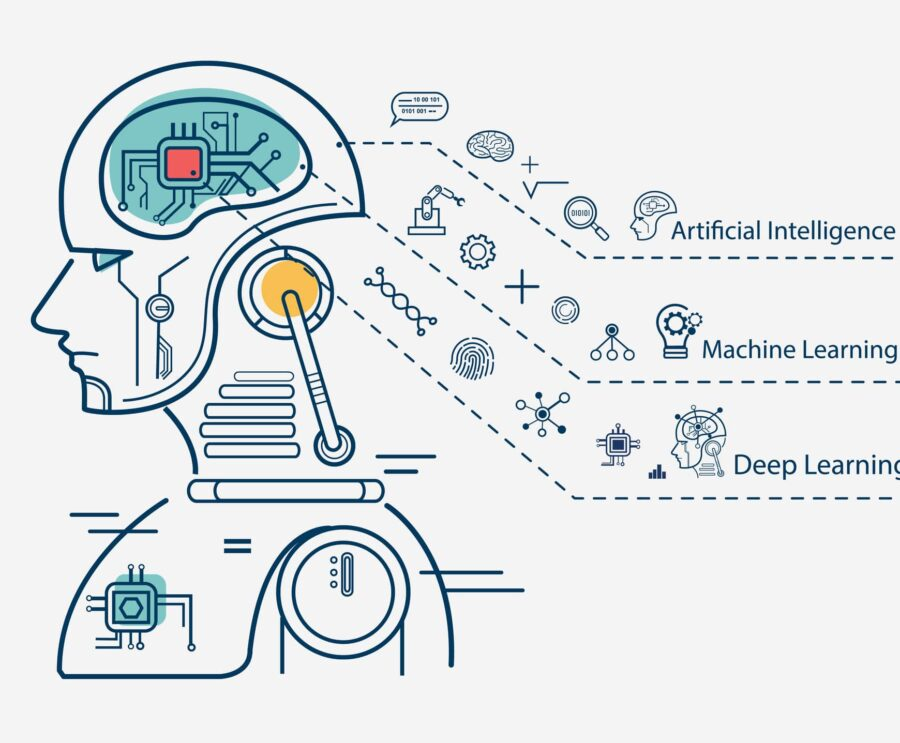

Machine Learning and Artificial Intelligence in Web Development
Presented by Mxmmsv
Introduction
Why AI and ML are important in web development
Definitions
What is Artificial Intelligence and Machine Learning?
Artificial Intelligence (AI)
Simulation of human intelligence by machines.

Machine Learning (ML)
Algorithms that learn from data to make predictions or decisions.
Why It Matters
How AI/ML impacts modern web development
- Personalized user experiences
- Automated tasks
- Smarter search and recommendations
- Improved security
Personalization
AI makes websites dynamic and user-specific
Example: E-commerce
- Smart product recommendations
- Behavior-based pricing
- Customized ads
Chatbots and Assistants
- AI-powered customer support
- Natural Language Processing
- Examples: Perplexity, ChatGPT, DeepSeek
Search and Recommendations
- Intelligent search with typo handling
- Recommendation systems
- Used by: Netflix, YouTube, Amazon
AI for Developers
- AI code assistants (e.g., GitHub Copilot)
- Automated testing
- Smart performance monitoring
Ethical Considerations
- Data privacy
- Bias and fairness
- Explainability of AI models
The Future
- Browser-based ML (e.g., TensorFlow.js)
- No-code AI tools
- Real-time personalization
- AI for accessibility
Conclusion
AI and ML are revolutionizing web development. Embrace them!
Q&A
Thanks for your attention. Any questions?